Brief
The current website had not been updated since the early 2000s. It was time to redesign the site to be more relatable for current students. The design and technical side were both out of date. The underlying service is solid and has many users who rely on these sites but RPS just needed a new user experience to enhance the usefulness of the service.
The Careers in Medicine service is given to all US MD medical students and is accessible to anyone else for a yearly fee of $75. The current service allows users to access applications and content that aid the student in their residency search. RPS is one of many sites that give users decision making capabilities for their journey to residency.
This is a vital resource to students and so it was important to make sure that the website is up to date and usable, so the service will continue to attract new users.
My Role
In this role I was the UX Designer of the site, working with a UX Developer, and the UX Director. We conducted weekly meetings with the Development team to discuss any issues and upcoming work. Also, we conducted weekly meetings with the Product owners to present and verify our designs. UX Design was working at least 1 sprint ahead of development.
Prior Work
Based on previous studies and feedback, there were a few things we already knew about students…
- Students rely heavily on our websites and information to make decisions
- MD and DO students equally use our resources
- Students need up to date and correct information to make the best decisions
Also, based on feedback we understood the different types of students that were coming to use our service…
Students Profiles
- Students don’t know what they want when they are coming to our sites
- Students know what specialty they want and come to our site to find residencies within that
- Students know what area they want but not the specialty
- Students know both specialty and area and want to refine their search further
These 4 student profiles were used to help aid the design of the site to make sure we accounted for all of these use cases.
There was an existing style guide that was utilized to save time.
Show Something on the First Page
The first page used to require the user to input all search criteria before showing any results. Based on the student profiles we know that some students don’t know what they are looking for when coming to our site. To accommodate those students we decided to go with an approach that showed the users the first 5 results and let the users filter from there.
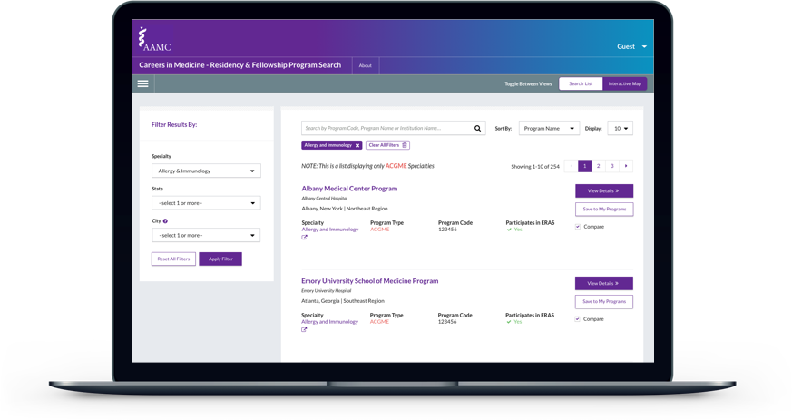MD vs DO Views
Based on previous research, we knew that the experiences of the DO students should be taken into consideration as well. Previously, the focus has always been on the MD students as their schools are part of the AAMC organization. But with the changing landscape DO students also heavily apply to MD residencies and their experiences should be accounted for as well. To do so we created role based views for the user based on whether they were a DO student or an MD student. These role based views did not remove any information for the DO students. The MD students were not able to see any DO residencies in the results list. Though, DO students were able to see both MD and DO residencies.
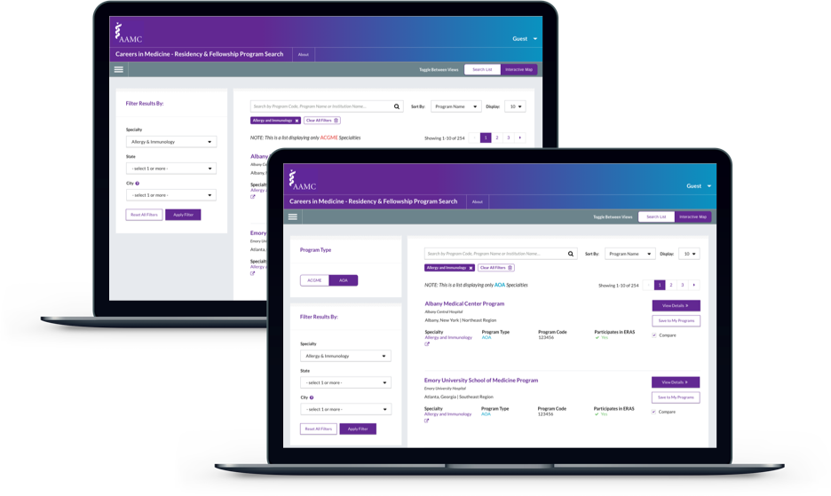Filters & Sort
Allowing the users to see results first without any input from them, completely changes how the user interacts with the content. Now instead of knowing ahead of time what you are searching for a user can use the filter and sort features to narrow down their search.
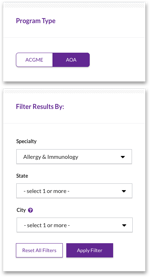The Filter component had been another component that was an existing pattern.
The filter tags were a completely different interaction than the previous site. Within the previous site a user would have to start a new search if they didn’t like the results they found but now with the new Filter component the user can just remove the filter tags and the results will update.
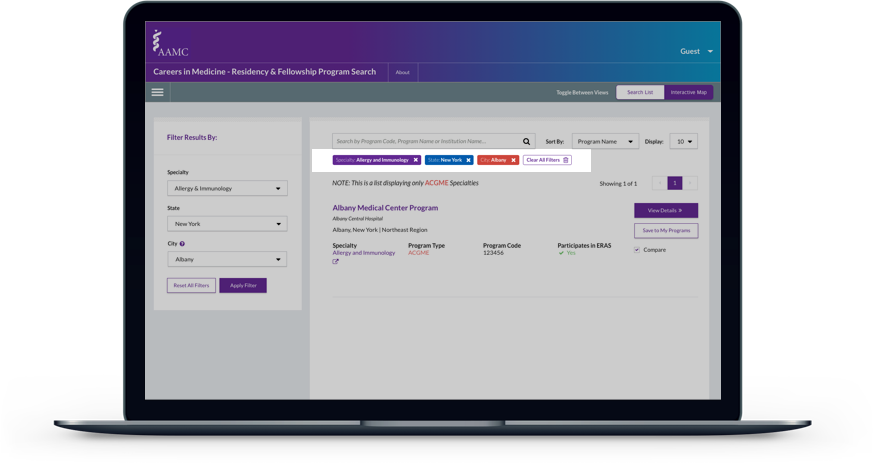All on One Page
Moving onto the Residency Program Detail view, our decision was to have all information for the Residency Program onto one page. This was also based on a previous pattern but we decided to make sure by tesing with users before we finalized the design.
There is a lot of information included within the Residency Program page and the previous site hid all the information within a tab view. But after discussion and some wireframing the decision was to include all information on one page as to allow the user to see everything.
This proved to be the case when we presented the new design to users. Clicking was viewed as more annoying than scrolling to view content. With these findings it solidified the decision to keep it all on one page.
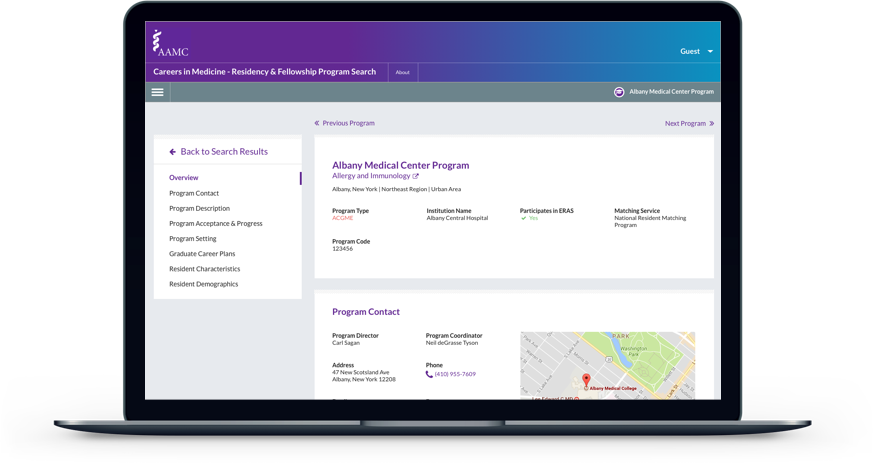Data Visualization
The data included in the Residency Program pages is what sets this site apart from other sites. It aggregates many data sources into one place.
There was a standard library (highcharts.js) already used for all data visualization in AAMC applications. All visualizations had to be designed with this library in mind.
Using data visualization allows the user to gain greater insights into the data than by text alone. Basic visualizations such as pie charts, line charts, and bar charts were utilized.
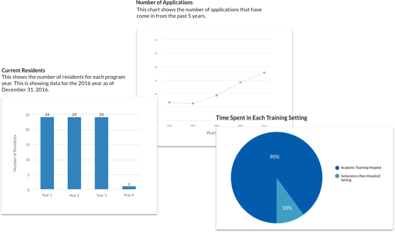Along with more interesting visualizations such as this bubble chart that was utilized to show the differences in Race and Ethnicity.
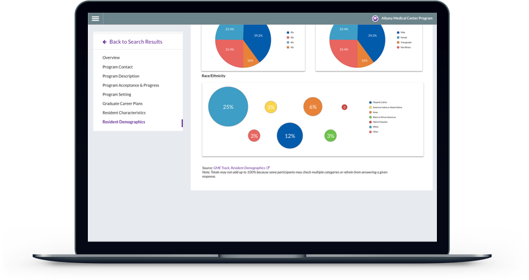Other visualizations utilized were more infographic style. This one created is displaying the Prior Experience Residents gained before joining the residency program.
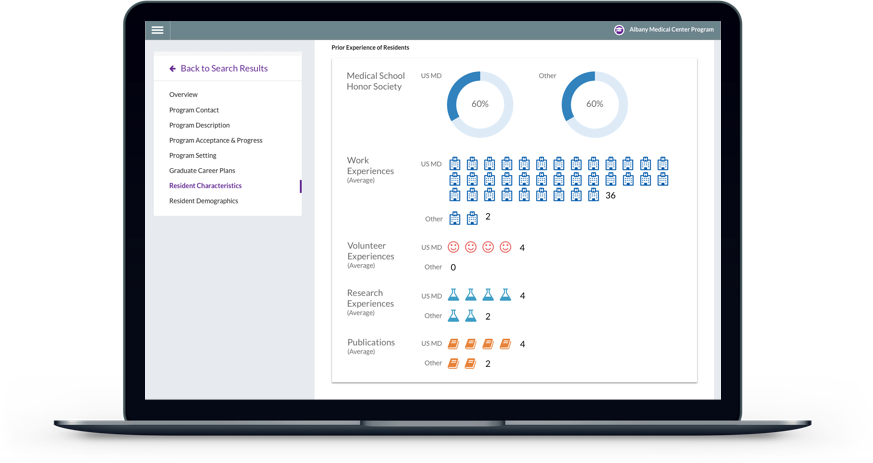The most difficult visualization to design was the Graduate Career Plans. This visualization shows what roles and careers Residents move onto after completing residency. Graduate Career Plans was designed as an infographic style.
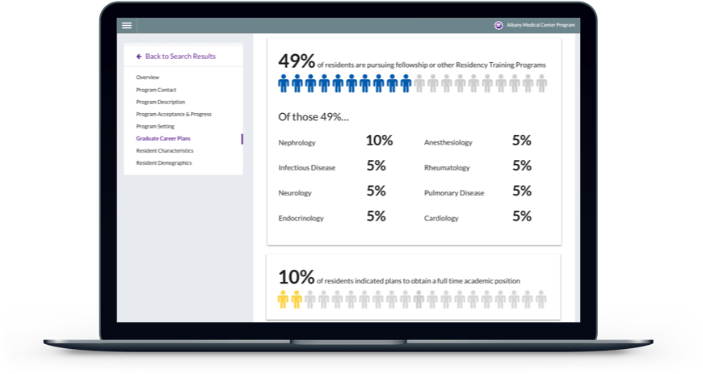 Graduate Career PlansData Quality & Privacy
Data Quality and more important Data Privacy are big concerns of this service. The data needs to be up to date and correct. Also, the privacy of the individuals data we are using needs to be accounted for as well. Because of data privacy concerns some data was not shown. Hiding the data was not good practice. Instead, any section with data that was missing or couldn’t be shown because of too little data points was still shown but only with a note explaining why the data was missing.
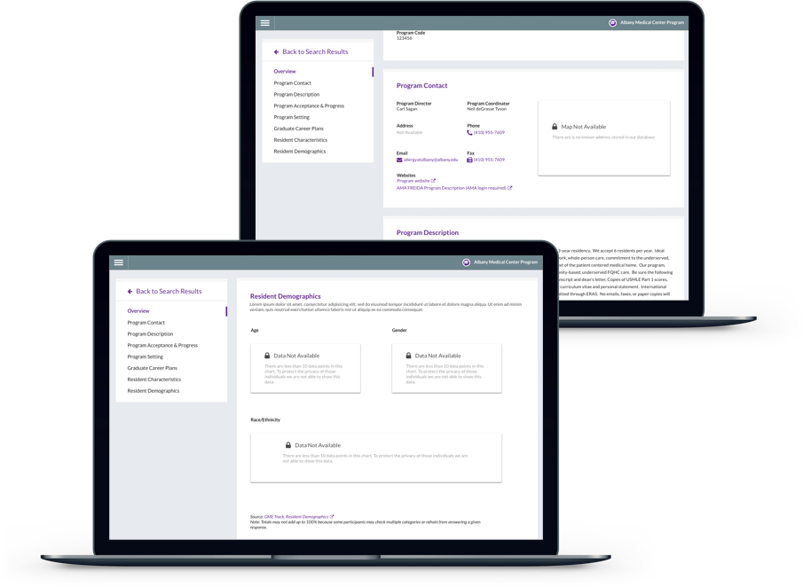Interactive Map View
There are some students that are constrained to a certain area maybe because of a spouse or family. We know this from the Student Profiles. The interactive map was designed to aid these students but also allow any other students to be able to see all programs within a certain state on the map.
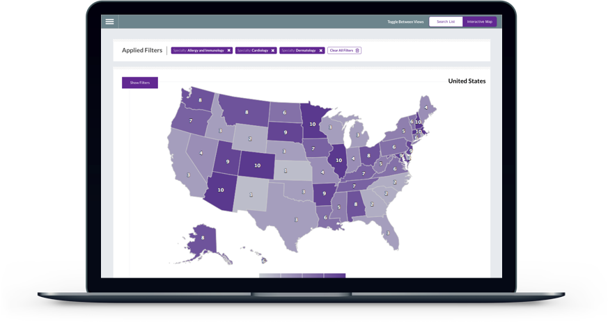 Country View - User will click on a State to go to the State view 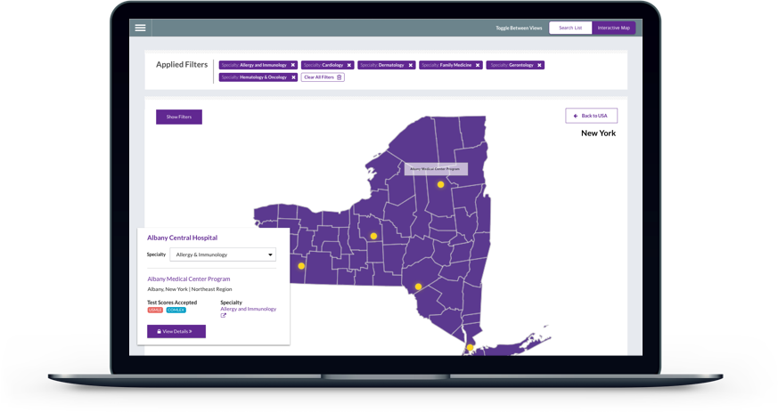 State View - User can see all institutions and select one to show institution cardConclusion
Overall, the redesign of the RPS ended successfully. Our goal to modernize and improve the UX of the site was achieved and was launched for users at the beginning of 2018.